Nhận từng file trên thiết bị hoặc gom toàn bộ thành một file ZIP duy nhất.
Workspace xử lý Drive tập trung
Biến link Drive thành kết quả sẵn dùng.
Dán một hoặc hàng trăm liên kết, chọn cách nhận file và để AutoTool Pro xử lý phần còn lại. Không extension, không cookie thủ công.
✓ Tải từng file
✓ Gom thành ZIP
✓ Chuyển Drive → Drive
Job đang xử lý
LIVEKhoá học Drive48 liên kết · ZIP đầu ra
72%Đã xử lý35 file
Thời gian02:14
Trạng tháiỔn định
Đang chuẩn bị đầu ra...Cấu trúc thư mục được giữ nguyên
✓Tại sao AutoTool Pro
Một quy trình, ba cách nhận kết quả.
Tập trung những thao tác rời rạc vào một workspace rõ ràng, có trạng thái và lịch sử.
Chuyển trực tiếp sang tài khoản đích và giữ cấu trúc thư mục khi phù hợp.
Xem tiến độ, thời gian ước tính, nhật ký và kết quả của từng job.
Kết nối bằng OAuth; thông tin kết nối được mã hoá trước khi lưu.
Trung tâm trợ giúp
Từ lần đầu đăng nhập đến khi nhận đủ file.
Hướng dẫn toàn bộ chức năng bằng từng bước ngắn, hình minh họa đúng vị trí nút bấm và mẹo xử lý lỗi thường gặp.
10 hướng dẫn dành cho người dùng
01Đăng nhậpTạo tài khoản
→
02Kết nối DriveChọn tài khoản nguồn
→
03Dán linkChọn đầu ra
→
04Nhận kết quảTải hoặc chuyển Drive
Bắt đầu
Chuẩn bị tài khoản và quyền sử dụng
01
Tài khoản
Đăng ký và đăng nhập
Bạn có thể dùng email + mật khẩu hoặc đăng nhập bằng Google. Tài khoản đăng nhập website và tài khoản Drive nguồn có thể khác nhau.
- 1Nhấn Đăng nhập ở góc trên bên phải.
- 2Chọn Đăng ký mới, nhập tên, email và mật khẩu từ 6 ký tự; hoặc dùng nút Google.
- 3Sau khi vào hệ thống, thanh trên cùng sẽ hiện tên, vai trò và số dư của bạn.
- 4Nếu quên mật khẩu, mở mục Quên mật khẩu để xem cách liên hệ hỗ trợ.
Mẹo: Không chia sẻ mật khẩu hoặc mã đăng nhập cho bất kỳ ai, kể cả người tự nhận là hỗ trợ.
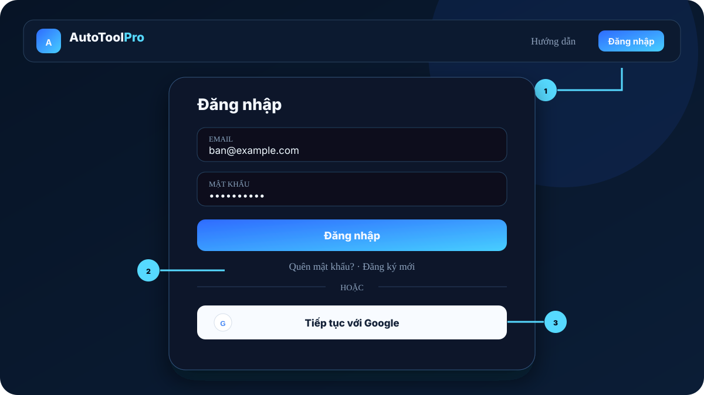
Workspace
Tạo và vận hành một job
04
Google OAuth
Kết nối Drive nguồn
Drive nguồn phải là tài khoản có quyền xem các file hoặc thư mục bạn muốn xử lý. Bạn chỉ cần kết nối một lần.
- 1Trong Workspace, tìm thẻ Kết nối Drive nguồn.
- 2Nhấn Kết nối Google và chọn đúng tài khoản có quyền xem file.
- 3Xác nhận quyền truy cập cần thiết trên trang Google.
- 4Khi quay về, email Drive nguồn và dấu xanh “Đã kết nối” sẽ xuất hiện.
An toàn: Kết nối dùng OAuth; bạn không phải nhập mật khẩu Google vào AutoTool Pro.
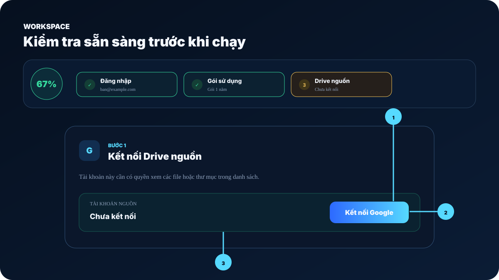
05
Đầu ra
Chọn đúng một trong ba chế độ
↓Tải từng file
Dễ kiểm soát, phù hợp ít file hoặc khi bạn chỉ muốn tải một phần.
◫Nén ZIP
Gom nhiều file thành một gói duy nhất, tiện lưu trữ và chia sẻ.
⇄Drive → Drive
Không tải qua thiết bị; cần kết nối thêm Drive đích và chọn thư mục nhận.
- 1Chọn thẻ chế độ trước khi dán link.
- 2Nếu chọn Drive đích, kết nối tài khoản nhận và nhập Folder ID hoặc nhấn tạo thư mục tự động.
- 3Đọc dòng gợi ý ngay dưới ba thẻ để kiểm tra lựa chọn cuối cùng.
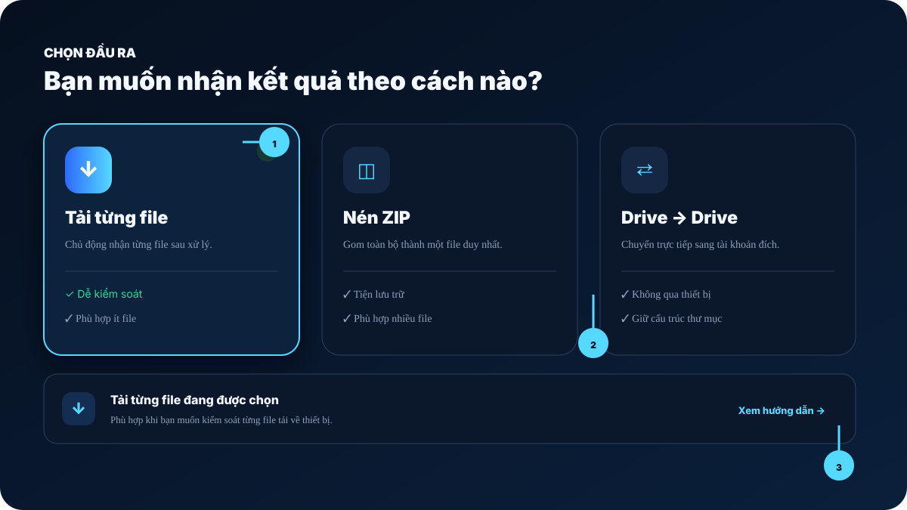
06
Đầu vào
Dán link và kiểm tra trước khi chạy
- 1Dán mỗi liên kết Drive trên một dòng, hoặc nhấn Dán từ clipboard.
- 2Quan sát bộ đếm: xanh = hợp lệ, vàng = trùng, đỏ = không đúng định dạng.
- 3Đặt Tên kết quả ngắn, dễ tìm; không cần thêm đuôi .zip.
- 4Nhấn Bắt đầu xử lý hoặc dùng phím tắt Ctrl/⌘ + Enter.
Nếu có dòng đỏ: Tool sẽ dừng để bạn sửa, tránh chạy nhầm URL ngoài Google Drive.
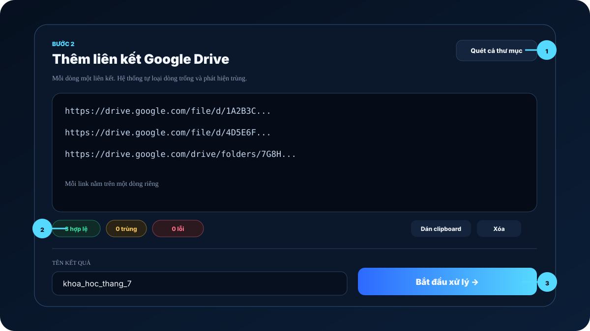
07
Folder scanner
Quét cả cây thư mục Drive
Dùng chức năng này khi bạn có một link folder lớn và muốn xem toàn bộ file con trước khi tạo job.
- 1Nhấn Quét cả thư mục bên phải tiêu đề ô nhập link.
- 2Dán link folder rồi nhấn Quét ngay; giữ cửa sổ mở trong lúc quét.
- 3Dùng ô chọn để giữ lại đúng file cần xử lý; thư mục chỉ dùng để hiển thị cấu trúc.
- 4Nhấn Khởi chạy Job với các File đã chọn.
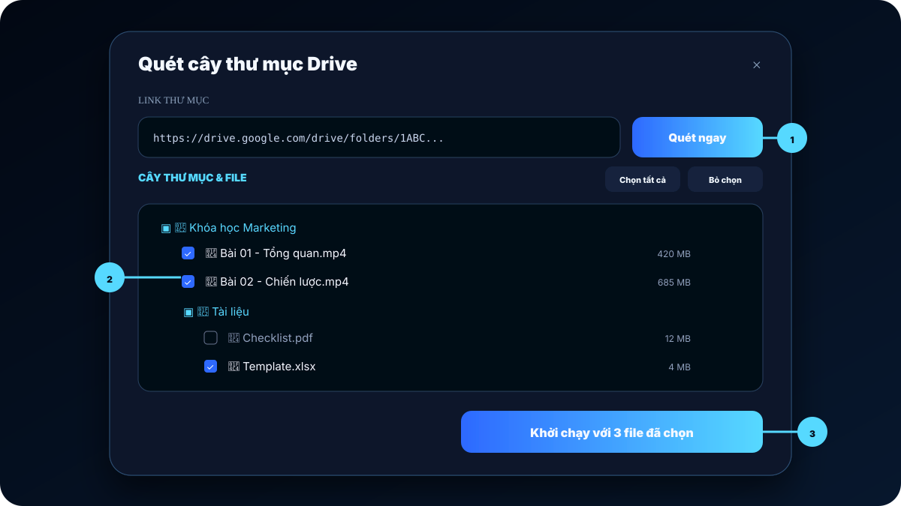
08
Theo dõi
Đọc tiến trình và nhận kết quả
- 1Vòng phần trăm và bốn mốc cho biết job đang ở bước nào.
- 2Đã chạy là thời gian thực tế; Còn khoảng chỉ là ước tính và sẽ tự cập nhật.
- 3Có thể rời trang khi job đang chạy; mở chuông thông báo hoặc Telegram để nhận tin hoàn tất.
- 4Khi đạt 100%, nhấn nút tải file/ZIP hoặc Mở trên Drive tùy chế độ.
- 5Nếu lỗi, mở Nhật ký kỹ thuật, sau đó dùng lại danh sách link để thử lại.
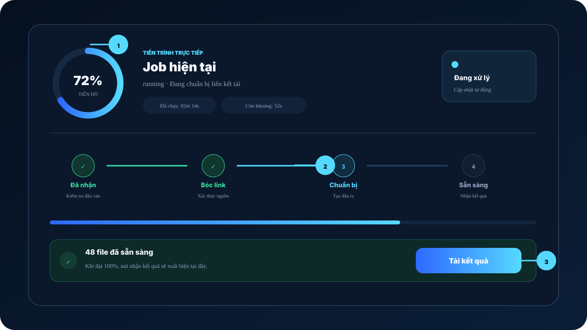
09
Quản lý job
Tìm lại kết quả và chạy lại job
- 1Mở Lịch sử để xem job mới nhất, chế độ đầu ra và số kết quả.
- 2Tìm theo tên hoặc lọc Đang chạy / Hoàn tất / Có lỗi.
- 3Nhấn Mở kết quả hoặc Theo dõi để quay về bảng tiến trình.
- 4Nhấn Dùng lại link để đưa danh sách cũ vào Workspace; tên kết quả tự thêm “_retry”.
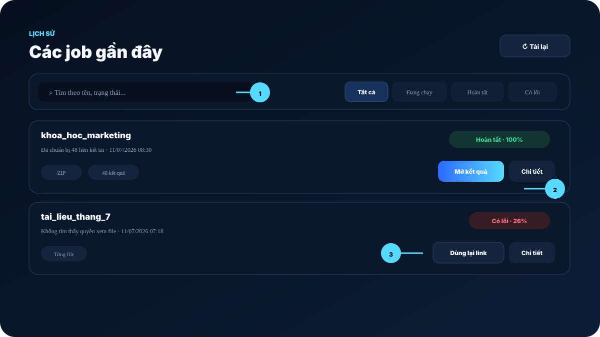
10
Cài đặt
Thông báo, Telegram và bảo mật
- 1Nhấn biểu tượng chuông để xem job, giao dịch và cảnh báo gói; chấm số là thông báo chưa đọc.
- 2Nhấn Bật để cho phép trình duyệt báo khi bạn đang ở tab khác.
- 3Nhấn biểu tượng ✦, nhập Chat ID Telegram để nhận trạng thái từ bot.
- 4Dùng biểu tượng mặt trăng/mặt trời để đổi sáng tối; bánh răng để đổi mật khẩu; mũi tên để đăng xuất.
Mẹo: Nếu trình duyệt từng chặn thông báo, hãy mở biểu tượng ổ khóa cạnh địa chỉ web và cho phép lại.
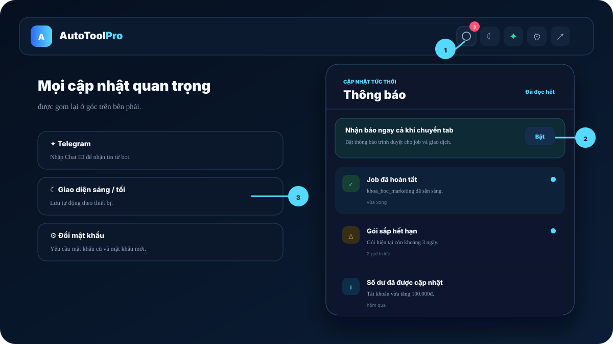
Quản trị
Chức năng chỉ dành cho admin
A1
AdminTổng quan và tìm người dùng
- 1Mở mục Admin xuất hiện sau khi tài khoản có quyền.
- 2Đọc các thẻ tổng quan về user, số dư, job và giao dịch chờ.
- 3Tìm theo email, tên hoặc gói rồi nhấn Quản lý.
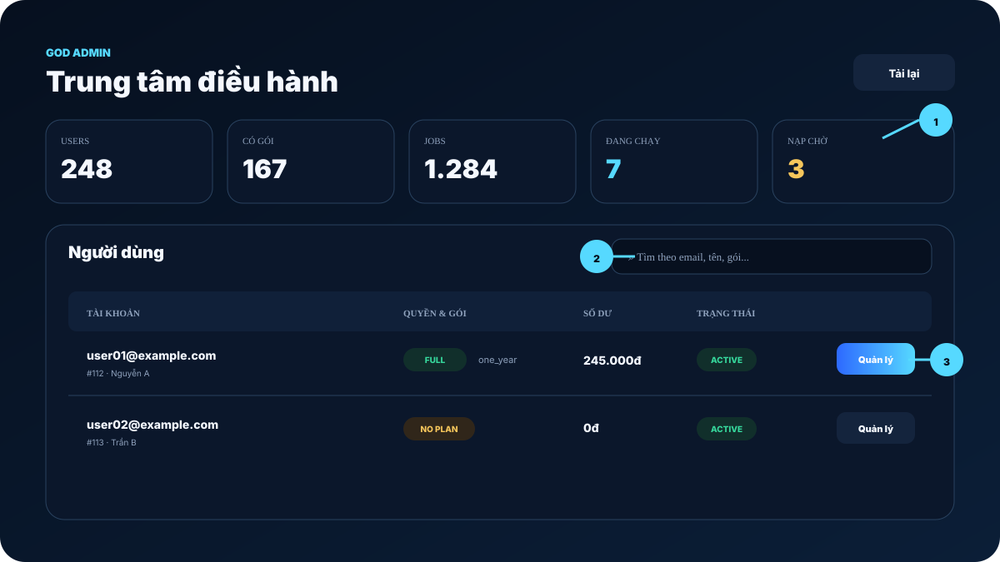
A2
Quản lý userSố dư, gói và bảo mật
- 1Đặt số dư chính xác hoặc cộng/trừ có chủ đích.
- 2Chọn gói và ngày hết hạn; bỏ trống để dùng thời hạn mặc định.
- 3Chỉ đổi mật khẩu hoặc khóa tài khoản sau khi xác minh đúng người dùng.
- 4Quyền admin chỉ nên cấp cho tài khoản thật sự cần quản trị.
Cẩn trọng: Mọi thay đổi số dư và quyền đều có tác động ngay.
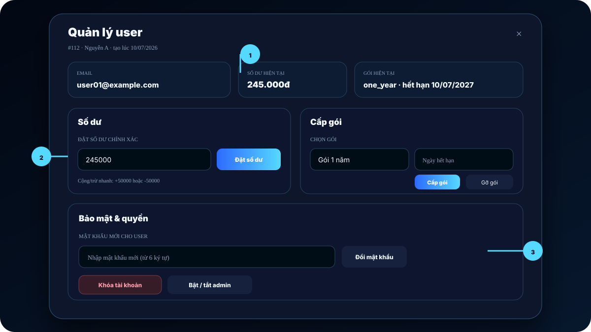
A3
Vận hànhGiao dịch và job gần đây
- 1Đối chiếu số tiền, mã nạp và người dùng trước khi duyệt thủ công.
- 2Không duyệt lại giao dịch đã được webhook cộng tự động.
- 3Dùng danh sách job gần đây để phát hiện lỗi lặp hoặc job bị treo.
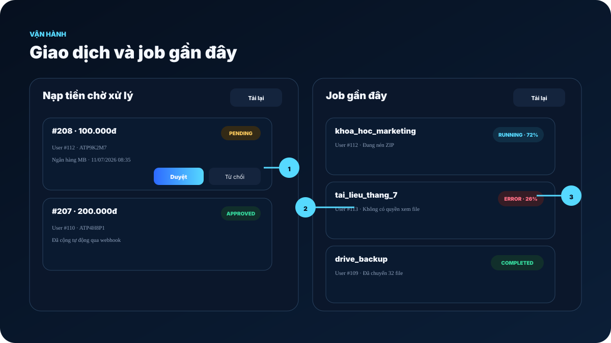
Xử lý nhanh
Câu hỏi thường gặp
Đã kết nối nhưng tool vẫn báo “Chưa kết nối Drive”
Nhấn Đồng bộ trong Workspace. Nếu chưa đổi, đăng xuất rồi đăng nhập lại và kết nối đúng tài khoản có quyền xem file.
Đã chuyển khoản nhưng số dư chưa tăng
Kiểm tra nội dung chuyển khoản có đúng mã nạp hay không, chờ ngân hàng ghi nhận rồi tải lại trang. Nếu vẫn thiếu, gửi ảnh giao dịch và mã nạp cho admin.
Trình duyệt chỉ tải một file rồi dừng
Cho phép website tải nhiều file trong cài đặt trình duyệt, sau đó mở lại kết quả từ Lịch sử và nhấn tải lần nữa.
Job báo lỗi hoặc không tìm thấy file
Kiểm tra tài khoản Drive nguồn còn quyền xem, link chưa bị xóa và không thuộc tài khoản khác. Mở Nhật ký kỹ thuật để lấy thông tin trước khi liên hệ.
Vẫn chưa xử lý được?
Nhắn admin qua Facebook ↗
Gửi ảnh màn hình và mã job cho admin.
Mô tả bạn đang ở bước nào, link là file hay folder và thông báo lỗi hiển thị trên màn hình.
⌕
Chưa tìm thấy hướng dẫn phù hợp
Thử từ khóa ngắn hơn như “ZIP”, “nạp tiền” hoặc “Drive”.
Workspace
Tạo phiên xử lý mới
Đăng nhập để kiểm tra quyền.
0%Sẵn sàng
Tải từng file
Phù hợp khi bạn muốn chọn và kiểm soát từng file tải về thiết bị.
Bước 1
Kết nối Drive nguồn
Tài khoản này cần có quyền xem các file hoặc thư mục trong danh sách. Chỉ cần kết nối một lần bằng Google OAuth.
Tài khoản nguồn
Kết nối Google
Chưa kết nối
Bước 2
Thêm liên kết Google Drive
Mỗi dòng một liên kết. Hệ thống tự loại bỏ dòng trống và phát hiện liên kết bị trùng.
0%Tiến độ
Tiến trình trực tiếp
Job hiện tại
Chưa có job nào đang chạy
Chờ job mớiCập nhật tự động
1Đã nhậnKiểm tra đầu vào
2Bóc linkXác thực nguồn
3Chuẩn bịTạo đầu ra
4Sẵn sàngNhận kết quả
Nhật ký kỹ thuật mở rộng
Nhật ký sẽ xuất hiện khi job bắt đầu...
Lịch sử
Các job gần đây
Tìm lại kết quả, theo dõi job đang chạy hoặc dùng lại danh sách liên kết.
Chọn gói phù hợp với bạn
Mỗi gói đều mở toàn bộ tính năng; chỉ khác nhau ở thời hạn sử dụng.
Số dư: 0đ
Nạp tiền
Nạp tiền bằng QR tự động
Thông tin nạp tự động
Dùng app ngân hàng quét mã QR bên phải. Hệ thống sẽ tự cộng số dư trong vòng 5 giây.
Bạn có thể chuyển số tiền tuỳ ý, hệ thống sẽ nhận chính xác số tiền bạn chuyển.
Quét mã QR sẽ tự động điền mã này. Hãy kiểm tra lại phần Nội dung chuyển khoản trên App ngân hàng để đảm bảo mã nạp chính xác.
QR chuyển khoản
Đang tải thông tin thanh toán...
Chưa cấu hình QR
Số tiềnTuỳ chọn
Mã nạp-
Lịch sử nạp
God Admin
Trung tâm điều khiển
Owner có thể xem toàn bộ user, sửa số dư chính xác, cấp gói, đổi mật khẩu và bật/tắt admin.
| User | Quyền | Số tiền | Hoạt động | Thao tác |
|---|